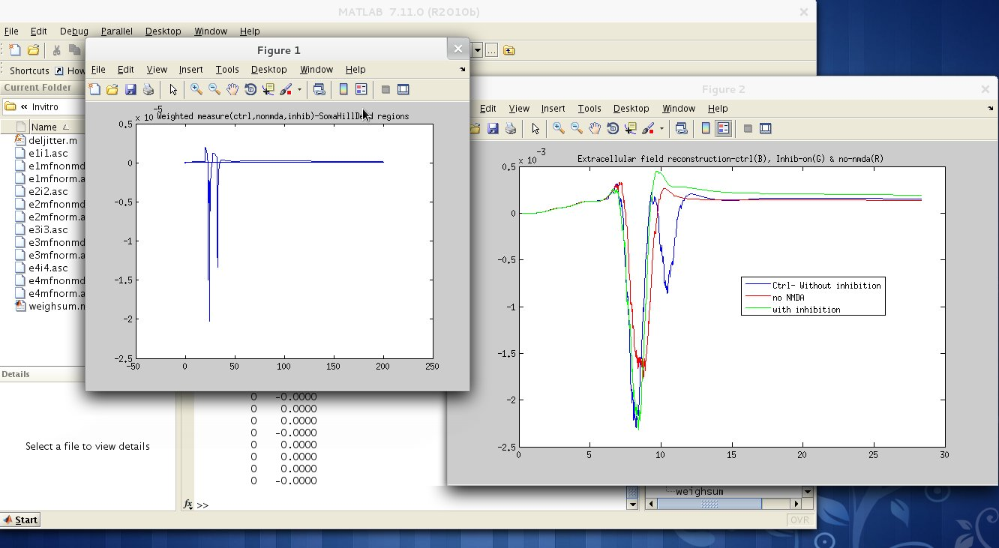
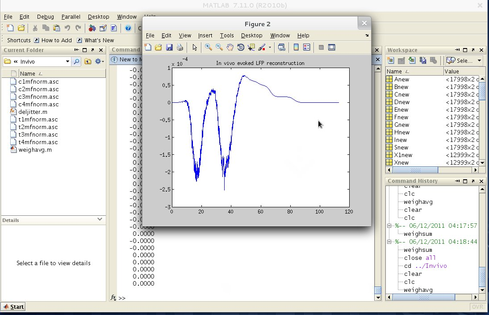

This is the README for ReConv algorithm. ReConv algorithm reconstructs evoked LFP in cerebellar granular layer. How-to: --------- Change current working directory to 'data\Invitro' and run "weighsum.m" to generate in vitro evoked LFP as reported in Fig. 5C. Change current working directory to 'data\Invivo' and run "weighavg.m" to generate in vitro evoked LFP as reported in Fig. 6B. In case of any errors while running the scripts, please clear all variables in memory and rerun the scripts. This set of codes have been tested in Matlab 2009b, 2010b and in GNU octave 3.4. Screenshots -------------   General info: ------------- Uses traces from multicompartmental GrC model (see http://senselab.med.yale.edu/ModelDb/showmodel.asp?model=116835) Last updated 11-June-2011 Model developer: Shyam Diwakar M. Developed at Amrita School of Biotechnology (India) and at Prof. Egidio D'Angelo's Lab at Univ of Pavia (Italy) Amrita School of Biotechnology, Amritapuri Clappana P.O., Kollam, 690 525, Kerala, India.file:///home/seva/work/ReConv/data/Invivo/weighavg.m http://research.amrita.edu/compneuro Email:shyam@amrita.edu Model published as [Diwakar et al., 2011, manuscript accepted, PLoS ONE] Shyam Diwakar, Paola Lombardo, Sergio Solinas, Giovanni Naldi, Egidio D'Angelo. "Local field potential modeling predicts dense activation in cerebellar granule cells clusters under LTP and LTD control", PLoS ONE, 2011.